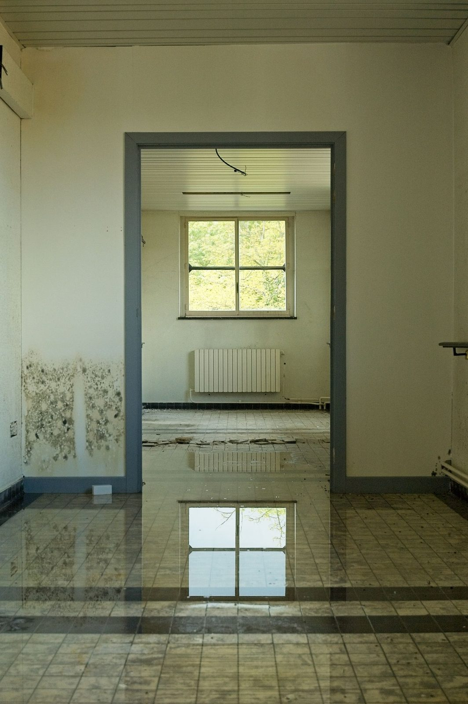
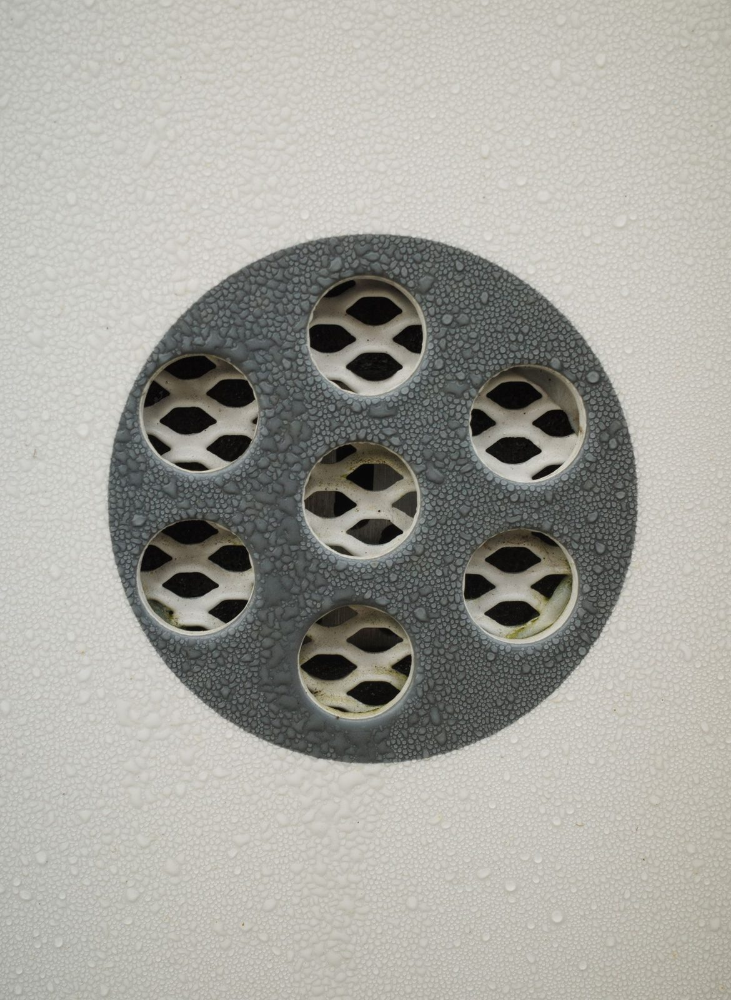
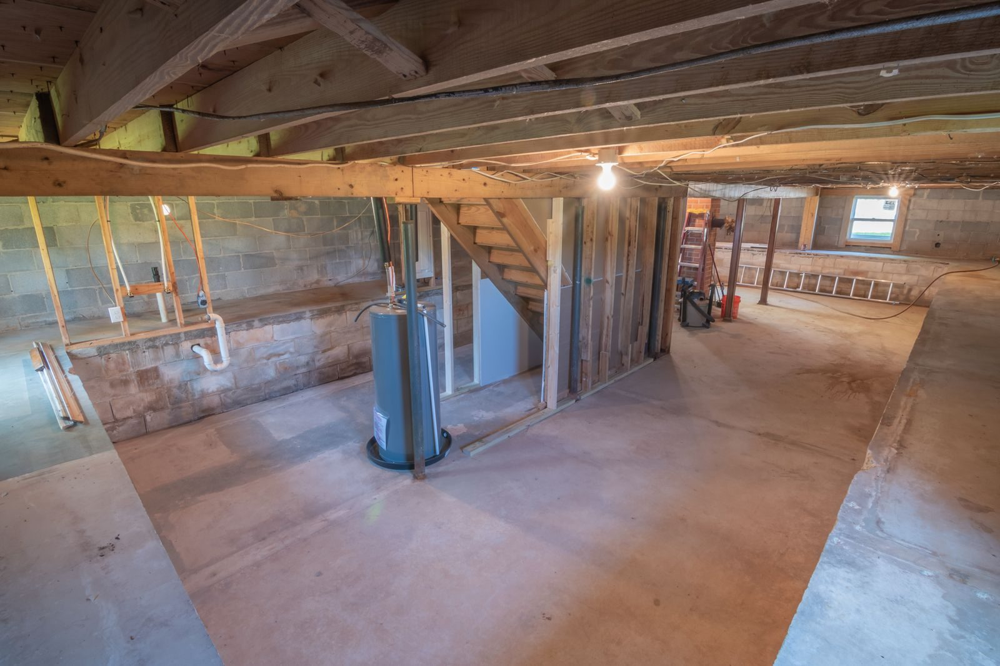

Emergency Water Extraction & Standing Water Removal
Standing water comes out first. We use truck-mounted extraction for large areas, weighted extraction on carpet, and submersible pumps for garages and low spots.
Learn more →Water on the floor, a ceiling dripping, a pipe still spraying? Blackland Restoration Co. handles water damage restoration in Plano, TX around the clock, and the moment you call, a crew is dispatched to your address. We stop the water, pull it out, dry the structure properly, and help you document every step for your insurance claim.
Shut off the main water valve, cut power to wet rooms at the breaker if it's safe, and take photos. Then call a 24/7 water damage restoration company right away, because mold can start growing within 24 to 48 hours.
☎ Call (214) 555-0134Mold timeline: 24 to 48 hours on wet drywall, wood and carpet pad.
Response: live answer 24/7, crew dispatched immediately.
Assessment: on-site assessment before work begins.
Water damage gets more expensive by the hour. Drywall wicks water upward, wood floors start to cup, carpet pad turns sour, and in North Texas humidity, mold can start growing on wet materials within 24 to 48 hours. That is why we answer every call live and send a crew straight out instead of booking you for "sometime tomorrow."
We help you shut off the main valve, isolate the appliance, or cap the line so the damage stops growing.
We check for electrical risk near wet areas, sagging ceilings, and contaminated water.
Thermal imaging and moisture meters show exactly how far the water traveled, including inside walls and under flooring.
Truck-mounted and portable extractors remove standing water so drying can begin the same visit.
Every job is different, so each service has its own page with the details. Here is how our work fits together, from the first hour to the final repair.

Standing water comes out first. We use truck-mounted extraction for large areas, weighted extraction on carpet, and submersible pumps for garages and low spots.
Learn more →
Mitigation is everything we do to stop the damage from spreading: removing what cannot be saved, protecting what can, and setting up controlled drying.
Learn more →
Low-grain refrigerant (LGR) dehumidifiers, high-velocity air movers, wall-cavity drying and floor mat systems pull moisture out of materials, not just the air.
Learn more →
Toilet backups, sewer line backups and storm runoff are Category 3 water. Protective equipment, removal of porous materials, and full sanitization.
Learn more →
If a leak went unnoticed, mold may already be growing. We contain the area, remove affected materials, HEPA-clean, and fix the moisture problem.
Learn more →
Once everything is dry, we rebuild: drywall, texture, paint, flooring, baseboards and cabinets. One team from the first call to the final coat of paint.
Learn more →
We also handle fire and smoke damage restoration, contents pack-out and storage, and commercial water damage restoration for offices, retail and multi-family properties.
Plano has a few problems that show up again and again. Knowing the cause tells us where the water went and how it needs to be dried.

Plano sits on Blackland Prairie clay that swells when wet and shrinks in drought. That movement stresses water lines running under concrete slabs. Warm spots on tile, damp baseboards, or a sudden jump in your water bill are common signs. Your plumber repairs the pipe; we dry the slab, flooring and walls.
More on slab leak water damage →
Many Plano homes have water heaters, HVAC units and plumbing in the attic, plus laundry rooms on the second floor. When a supply line fails or a drain pan overflows, the water travels down through insulation, ceilings and walls before anyone sees it.
See burst pipe water damage →
Heavy spring storms and hail can open up roofs, and properties near Spring Creek and Rowlett Creek can take on runoff during flash flooding. Wet ceilings and drywall get their own process, covered on our ceiling and drywall water damage page.

A running toilet, a failed supply valve under a vanity, or a leaking shower pan can soak subfloors for weeks before a stain appears.
See toilet and bathroom overflow cleanup →Our drying process follows the IICRC S500 standard for professional water damage restoration. In plain terms, that means we measure, we don't guess.
Source stopped, water category and class identified, moisture mapped. Determines what can be saved and what must go.
Standing and trapped water removed from floors, carpet and pad. Removing water by extraction is far faster than evaporation.
Unsalvageable materials (wet pad, swollen baseboard, contaminated drywall) removed. Prevents odor, mold and hidden rot.
LGR dehumidifiers, air movers, cavity and floor drying set up. Dries the structure, not just the air.
Daily moisture readings logged until materials hit dry targets. Proves the job is truly finished.
Repairs, rebuild and final walkthrough. Puts your home back the way it was.
Most residential losses dry in roughly three to five days once equipment is set, depending on materials and how long the water sat. Concrete slabs and hardwood can take longer, and we'll tell you that up front.

Water claims go smoother when the documentation is right from day one. We photograph the damage before we touch anything, record moisture readings every day, and write estimates in Xactimate, the estimating software most insurance companies use.
Most homeowner policies cover sudden and accidental water damage, like a burst pipe, but may exclude long-term leaks, and flooding from outside usually needs a separate flood policy.
When water damage hits, you need a restoration company in Plano with trained technicians, proven methods and a clear plan. Here's what sets us apart:
Our crews cover all of Plano, from the custom homes of West Plano to the established neighborhoods of Central and East Plano and the historic streets around Downtown. That includes Willow Bend, Deerfield, Kings Ridge, Legacy West and Granite Park out west; Preston Meadow, Whiffletree, Hunters Glen, Russell Creek and Chase Oaks in Central and North Plano; and Haggard Park, Los Rios and the Spring Creek and Rowlett Creek corridors on the east side.
We dispatch along US-75, the Dallas North Tollway, President George Bush Turnpike and Sam Rayburn Tollway to reach you quickly anywhere in the city.
Shut off your main water valve first, then call a restoration company before you call anyone else. A plumber fixes the pipe, but extraction and drying need to start right away to limit damage. We can work alongside your plumber and get drying started the same visit.
Yes. We answer calls 24 hours a day, seven days a week, including weekends and holidays, and send a crew out as soon as you call.
Mold can begin growing on wet drywall, wood and carpet pad within 24 to 48 hours, and North Texas humidity speeds that up. Getting materials dry quickly is the single best way to prevent it.
Many policies cover sudden and accidental water damage, such as a burst supply line or a failed water heater. Gradual leaks, maintenance issues and outside flooding are often treated differently. Your policy wording decides it, and we'll give your adjuster the documentation they need to make a fair decision.
Yes. We document the loss, write the estimate in Xactimate, and communicate with your adjuster. We'll walk you through how payment works on your specific claim before major work begins, so there are no surprises.
Usually not. Most families stay home while drying equipment runs. If there is sewage, active mold or major demolition, we'll recommend keeping people and pets out of the affected rooms.
It depends on the size of the affected area, the water category, the materials involved and how many days of drying are needed. We provide an on-site assessment and explain the scope before work goes beyond emergency steps.
Every hour matters with water damage. Call now, talk to a real person, and we'll dispatch a crew immediately to stop the water, start drying, and protect your home and your claim.
☎ Call (214) 555-0134Blackland Restoration Co.: 24/7 emergency water damage help in Plano, Texas.